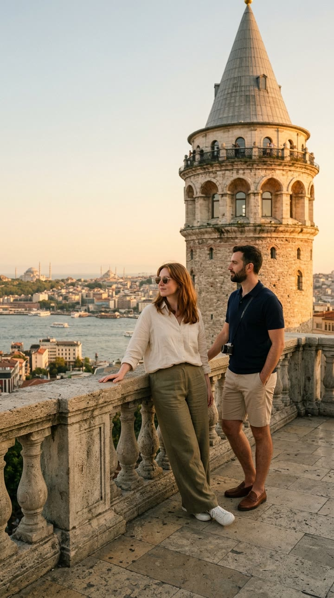
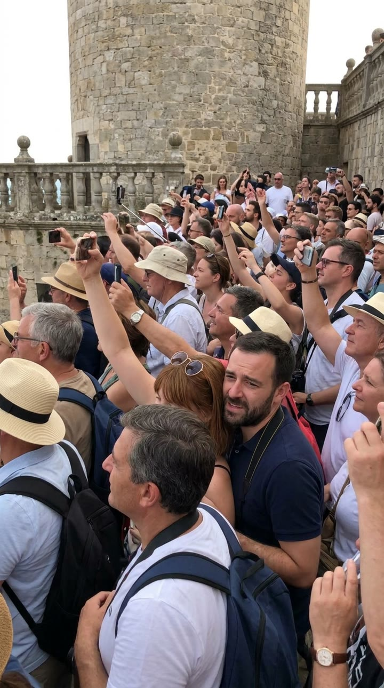
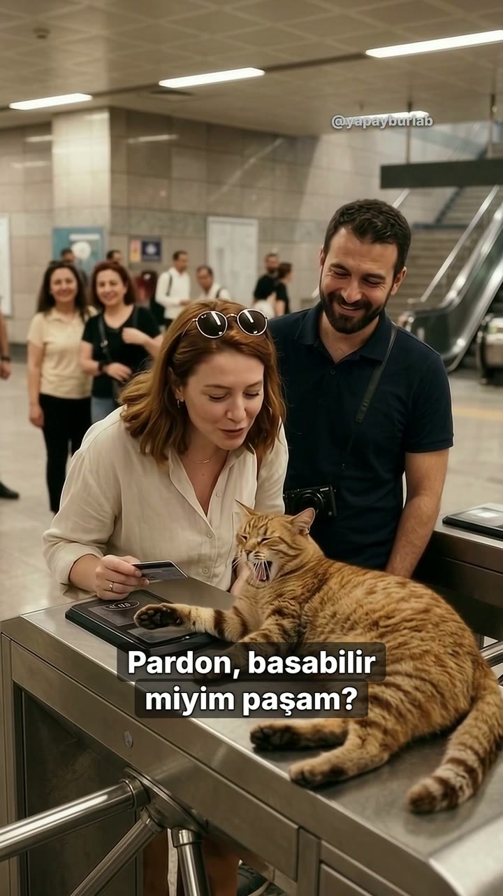

@yapayburlab · Rehber merkezi
İstanbul Turu: Broşür vs Gerçek (YZ hiciv reklamı nasıl yapıldı)
Yapay BurLab · TUR rehberi · 6 Kasım 2026
Videodaki "İstanbul Turu %50 İndirim" uydurma bir kampanya: gerçek bir tur ya da indirim yok, bir hiciv. Hiçbir karesi çekilmedi. Önce kusursuz bir broşür karesi geliyor, hemen ardından aynı yerin komik gerçeği ve karakterlerin Türkçe tepkisi. Burada kullandığımız istemleri ve yaptığımız hataları veriyoruz; kaydetmediğimiz tek istemi de açıkça belirttik. Sen de kendi şehrinle dene.
Başlamadan önce
- Görsel ve video: Google Flow (https://labs.google/flow). Görselleri Nano Banana 2.1, videoları Omni 1.1 Flash modeliyle ürettik. Biz Google AI Ultra planındaki hesapla çalıştık; erişim ve kredi plana göre değişebilir.
- Kredi (bizim hesabımızda, 5 Kasım 2026): 6 saniyelik 720p video 10 kredi, 8 saniyelik 12 kredi tuttu. Görseller kredi düşürmedi. Bu bilgiler plana göre değişebilir; üretmeden önce Flow'un ayar menüsünde yazan krediye bak.
- Toplam: 6 konuşan sahne. Projenin tamamında, ilk denemeler dahil 154 kredi harcadık.
- Fikir ve replikler: Gemini (https://gemini.google.com). Model seçiciden Pro modelini seçtik; bizim denememizde varsayılan hızlı model bu isteğe "yardımcı olamıyorum" dedi.
1. Fikir: broşür vs gerçek
Her sahne iki parçadan oluşuyor:
- 2 saniyelik parlak broşür karesi: durağan görsel, yavaş yakınlaşma.
- Hemen ardından aynı yerin gerçeği: video, karakter konuşuyor.
Mizah, vaat ile gerçek arasındaki farktan çıkıyor. İnsanlarla, esnafla, taksiyle ya da çöple dalga geçmedik. Yalnızca martı, kedi, lodos, yokuş ve kalabalık gibi şehrin sevimli kaosunu kullandık.
Gemini'ye yazdığımız istem:
İstanbul için kısa, dikey bir yapay zekâ hiciv reklamı yapacağız: "Broşür vs Gerçek". Her sahnede önce kusursuz bir broşür karesi, sonra aynı yerin komik gerçeği gelsin. Turist bir çift olsun ve her gerçek sahnede tek bir kısa Türkçe tepki repliği söylesin. Esnaf, taksi ve çöp şakası yapma; şehrin sevimli kaosunu kullan. 5 sahne ve repliklerini tablo olarak öner.Gemini'nin önerdiği tablodan en iyi sahneleri seçtik, replikleri de kendimiz yazdık.
2. Aynı çifti her sahnede tutmak
Aşağıdaki çift tarifini her istemde kelimesi kelimesine aynı kullandık. Aşağıdaki istemlerde bu metin [ÇİFT] diye geçiyor; yerine bu tarifi aynen yapıştır.
the same tourist couple: woman early 30s, shoulder-length auburn hair, cream linen shirt, olive wide-leg trousers, white sneakers, round sunglasses pushed up on her head; man early 30s, short dark beard, navy polo shirt, beige chino shorts, brown loafers, small camera on a strapTarifi kısaltırsan karakterler sahneden sahneye değişir.
3. Broşür karesi (görsel)
Flow'da ayarlar menüsünden Resim, oran 9:16 ve x2 seç. Model: Nano Banana 2.1.
Vapur:
Glossy luxury travel-brochure photo, vertical 9:16. On the open upper deck of a classic white Istanbul passenger ferry on a perfectly calm, mirror-smooth Bosphorus at golden hour, [ÇİFT] leans together at the railing, smiling, hair perfectly neat, a gentle breeze. Mosque silhouettes on the far shore. Flawless, aspirational, no text, no logos.Galata:
Glossy luxury travel-brochure photo, vertical 9:16. On a quiet historic stone viewing terrace in Galata, Istanbul at golden hour, the woman from [ÇİFT] stands completely alone at the parapet, gazing at the Golden Horn and old city skyline, a medieval round stone tower behind her. Serene, empty, flawless, no text, no logos.Sokak:
Glossy luxury travel-brochure photo, vertical 9:16. [ÇİFT] stroll hand in hand along a flat, charming cobblestone street in old Istanbul lined with colorful wooden houses and blooming bougainvillea, soft golden light, perfectly empty and calm. No text, no logos.
Metro sahnesi için broşür karesi üretemedik. Metro turnikesi, istasyon holü, tren vagonu ve kırmızı halı denemelerinin dördü de kurallara takıldı; hiçbiri kredi düşürmedi. Bu sahneyi broşürsüz bıraktık.
4. Gerçek sahnesi: önce başlangıç karesi, sonra konuşan video
- Aynı yerin "gerçek" hâlini önce görsel olarak üret (Resim, 9:16, x2).
- Ayarlarda Video → Kareler → 9:16, model Omni 1.1 Flash, 720p, 6 sn, x1 seç.
- Başlat kutusuna bu görseli koy. Video bu kareden başlayacak.
- İstemde ne olacağını anlat ve karakterin repliğini Türkçe, tırnak içinde yaz. Replik 3–5 kelimeyi geçmesin.
Kahvaltı ve martı ("Simidim gitti!")
Başlangıç karesi:
Vertical 9:16 photorealistic luxury travel-commercial still. Golden hour on an elegant rooftop terrace overlooking the Bosphorus in Istanbul, mosque domes and minarets softly blurred in the distance. A beautiful Turkish breakfast table: tulip-shaped tea glasses standing UPRIGHT and full on their saucers on the table, cheese, olives, tomatoes. The tourist couple sits side by side behind the table: woman early 30s, shoulder-length auburn hair, cream linen shirt, round sunglasses pushed up on her head; man early 30s, short dark beard, navy polo shirt, small camera on a strap. The man proudly holds a sesame simit bread ring up in his raised right hand, both smiling at the camera. High in the sky above them, a single large seagull is gliding toward the simit, still far away. Calm, idyllic, everything on the table is still and resting. No text, no logos, no watermarks.Video:
The seagull swoops down fast and snatches the simit cleanly out of the man's raised hand with its beak, then flies away over the Bosphorus. The bearded man freezes with his empty hand still raised and shouts in Turkish, shocked: "Simidim gitti!" The woman bursts out laughing. The tea glasses stay perfectly still and upright on the table, nothing spills, nothing floats. Clear Turkish speech with accurate lip sync. Static camera, golden hour, realistic physics, no text, no subtitles.Vapur ve lodos ("Ilık esinti buysa!")
Başlangıç karesi:
Vertical 9:16 realistic candid travel-video still, same ferry deck, overcast windy day, choppy grey Bosphorus with whitecaps. [ÇİFT] stand at the railing in the strong southwest wind: the woman's auburn hair is blown completely across her face, the man squints with his polo shirt flapping, both gripping the railing. No text, no logos.Video:
Strong gusts of wind keep blowing on the ferry deck; the auburn-haired woman pulls her hair away from her face but it blows right back, and she says in Turkish, sarcastic and laughing: "Ilık esinti buysa!" The bearded man laughs and squints into the wind. Clear Turkish speech with accurate lip sync, loud wind and sea sounds. Handheld but steady, realistic physics, no text, no subtitles.
Galata kalabalığı ("Manzara nerede, manzara?!")
Başlangıç karesi:
Vertical 9:16 realistic candid travel-video still, same historic stone terrace with the medieval round stone tower. The woman from [ÇİFT] is squeezed in the middle of a dense, friendly crowd of tourists who all hold phones and selfie sticks up in the air pointing at the same view; only the top of her head and her raised phone are visible among them. Cheerful, comedic, faces natural and friendly. No text, no logos.Video (kopya adam hatasından sonraki düzeltilmiş hâli):
There is exactly ONE bearded man in a navy polo shirt in this scene, the one in the middle foreground; nobody else looks like him or wears navy. The packed crowd of tourists keeps raising phones and selfie sticks. The bearded man rises on his tiptoes trying to see the view, gives up, turns to the camera, spreads his hands and says in Turkish, exasperated: "Manzara nerede, manzara?!" Clear Turkish speech with accurate lip sync, crowd murmur. Static camera, realistic, faces natural, no duplicates, no text, no subtitles.Metro ve kedi ("Pardon, basabilir miyim paşam?")
Başlangıç karesi: İlk istemde çift turnikenin altından geçiyordu ve istem reddedildi (aşağıda, hatalar bölümünde). İkinci istemde bu cümleyi "kadın kartını, okuyucunun üstünde uyuyan kedinin patisinin yanına tutuyor" diye değiştirdik. Bu ikinci istemin tam metnini kaydetmedik, bu yüzden burada uydurmuyoruz. Kendi istemini aşağıdaki video istemindeki sahneye göre yaz: metro turnikesi, okuyucunun üstünde uyuyan iri bir tekir, yanında [ÇİFT], okunur tabela yok, logo yok.
Video:
The auburn-haired woman holds her transit card out toward the card reader, but the big sleeping tabby cat lying on it stretches its paw over the reader and yawns widely. The woman leans down to the cat and says politely in Turkish, smiling: "Pardon, basabilir miyim paşam?" The bearded man beside her chuckles. Clear Turkish speech with accurate lip sync, soft station ambience. Static camera, realistic, no readable signs, no text, no subtitles.
Yokuş ("Everest mi burası?!")
Başlangıç karesi:
Vertical 9:16 realistic candid travel-video still, an extremely steep cobblestone street in old Istanbul climbing almost vertically toward the sky between colorful wooden houses. [ÇİFT] are halfway up, bent forward, out of breath, the man holding on to a house's window grille, the woman with hands on her knees; a calm local cat sits comfortably on a doorstep watching them. No text, no logos.Video:
The exhausted couple keep climbing the steep street in slow heavy steps, panting. The bearded man stops, looks up at the endless slope, and says in Turkish, out of breath and in disbelief: "Everest mi burası?!" The auburn-haired woman laughs breathlessly. Clear Turkish speech with accurate lip sync, natural city ambience. Static camera, realistic, no text, no subtitles.Martı geri dönüyor ("Çayı da vereyim mi abi?")
Başlangıç karesi: kahvaltı videosunun son karesi (martı uçup gitmiş, masa sakin). Kareyi videodan alıp Başlat kutusuna yükledik.
The same seagull glides back from the sky and lands on the breakfast table between the plates, holding half of the simit in its beak, staring at the man. The bearded man looks at the seagull and says in Turkish, deadpan: "Çayı da vereyim mi abi?" The woman laughs. The tea glasses stay upright and perfectly still, nothing spills, nothing floats. Clear Turkish speech with accurate lip sync. Static camera, golden hour, realistic physics, no text, no subtitles.5. Yaptığımız hatalar (ve çözümleri)
- Kendi kendine uçan çay bardağı: İlk görselde bardak zaten havada çizilmişti. Video da onu havada başlattı ve bardak sebepsiz döküldü. Çözüm: başlangıç karesinde her şey yerinde olsun ("tea glasses standing UPRIGHT and full on their saucers"), sahnede tek bir komik olay kalsın: martı.
 
- Kalabalıkta aynı adamdan iki tane: Galata sahnesinde model sakallı adamı kopyaladı. Çözüm: İstemin başına "There is exactly ONE bearded man in a navy polo shirt in this scene… no duplicates" ekleyip bir kez daha ürettik.
- Kurallara takılan sahne: "Turnikenin altından geçmek" bilet kaçırmak gibi algılandı ve reddedildi; kredi düşmedi. Sahneyi "kart, uyuyan kedinin patisinin yanına tutuluyor" diye yeniden yazdık.
- 6 saniye yeter: Bizim denemelerimizde bozulma çoğunlukla 5. saniyeden sonra başladı. 6 saniyelik üretim hem daha ucuz hem daha temiz.
- Kamera askısında yazı: Bir sahnede kamera askısında bir marka yazısı çıktı. Kurguda kapattık. İsteme "no logos" yazmak her zaman yetmiyor; sonucu kare kare kontrol et.
6. Kurgu
- Broşür kareleri 2 saniye sürüyor, altında yumuşak bir arp çalıyor. Gerçeğe kesilirken müzik plak cızırtısıyla duruyor ve sahnenin kendi sesi geliyor.
- Sonda martı simitle geri dönüyor. Son kare ilk kareye bağlandığı için video döngüye giriyor.
Sık yapılan hatalar
- Karakter her sahnede değişiyor: Tarifi kısaltma; her istemde aynı metni kullan.
- Model yazı ya da logo çiziyor: İstemin sonuna "no text, no logos" ekle. Yine çıkarsa kurguda kapat.
- Replik duyulmuyor ya da dudak kayıyor: "Clear Turkish speech with accurate lip sync" ekle, repliği kısa tut, kamerayı sabit tut ("Static camera").
- İstem reddedildi: Kural ihlali gibi okunabilecek eylemi (kaçak geçiş vb.) zararsız bir eylemle değiştir. Reddedilen üretimden kredi düşmedi.
Krediler
- Görsel ve video: Google Flow (Nano Banana 2.1, Omni 1.1 Flash). Fikir: Gemini.
- Müzik: "Harp Relax" (Mixkit #1057) ve "Let's Move" (Michael Ramir C., Mixkit #836), Mixkit Stock Music Free License.
- Efektler: Mixkit (#702, #1387, #2836, #1177, #2407, #364, #45, #1486; Mixkit Sound Effects Free License). Freesound CC0: felix.blume (#167374), bone666138 (#398415), TRP (#616623), tembelkaptan (#181256).
- İlham aldığımız yapı: "Paris City Tours | AI Satire" (Wytse Koetse). Karesi, müziği ve metni kullanılmadı.
- Seslendirme: kendi sesimiz. Karakter replikleri Flow videolarının kendi sesi.
Sonraki adım
Sırada hangi şehrin broşürü olsun? Videonun altına yaz; en çok isteneni deneyeceğiz. Yeni denemeler için @yapayburlab'ı takip et.